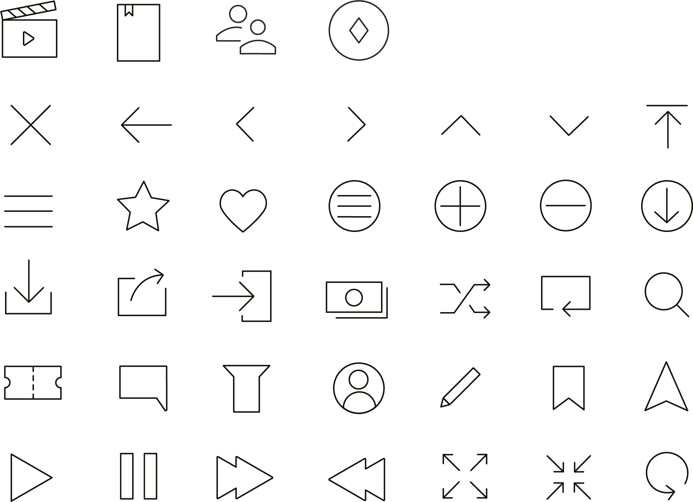

Design
Design
‘심플’, ‘빈티지’, ‘감각적인’이라는 세가지 키워드로 디자인 콘셉트를 선정하였습니다.
많은 정보를 한 눈에 볼 수 있고
쉽게 찾을 수 있는 디자인
독립영화와 독립서점의 느낌을
나타낸 텍스처를 사용한 디자인
독립 예술의 감각적인
느낌을 살린 디자인
따뜻하면서 마음을 편안하게 만드는 브라운 컬러를 사용하여 독립문화의 느낌을 나타내고자 하였습니다.
#B68774
#C09788
Main Color
#FFFFFF
#E3E3E3
Sub Color
독립이라는 단어에서 나오는 감각적인 부분을 표현하기 위해 인장느낌을 사용하였습니다.
타이포는 가독성이 좋은 ‘Apple SD 산돌고딕 Neo’ 와
독립문화의 느낌을 잘 나타내 줄 수 있는 ‘나눔명조’를 사용하였습니다.
독립적으로 독립콘텐츠 즐기기, 독립컬쳐
독립적으로 독립콘텐츠 즐기기, 독립컬쳐
독립적으로 독립콘텐츠 즐기기, 독립컬쳐
독립적으로 독립콘텐츠 즐기기, 독립컬쳐
독립적으로 독립콘텐츠 즐기기, 독립컬쳐
독립적으로 독립콘텐츠 즐기기, 독립컬쳐
아이콘은 심플하면서 사용성을 높이기 위해 직설적이고 간결하게 나타내었습니다.
